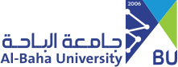
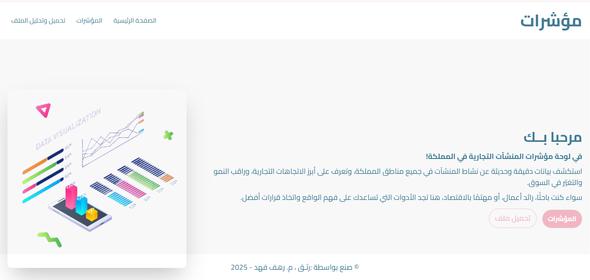
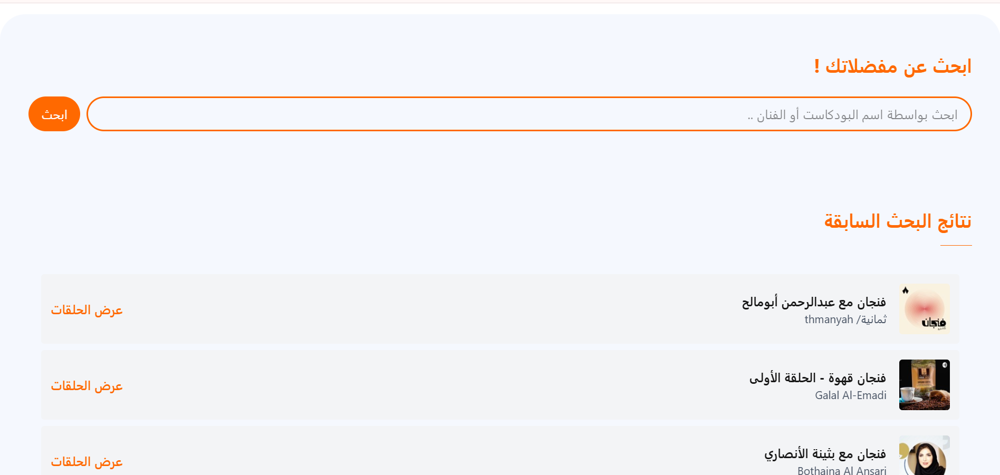
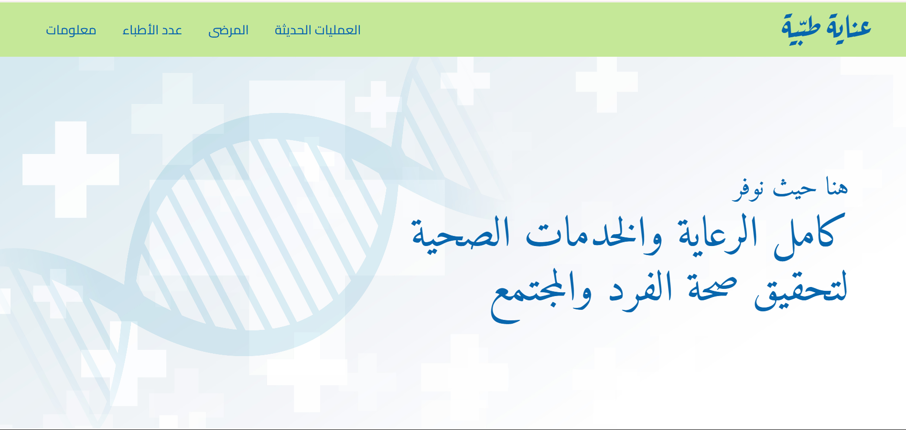
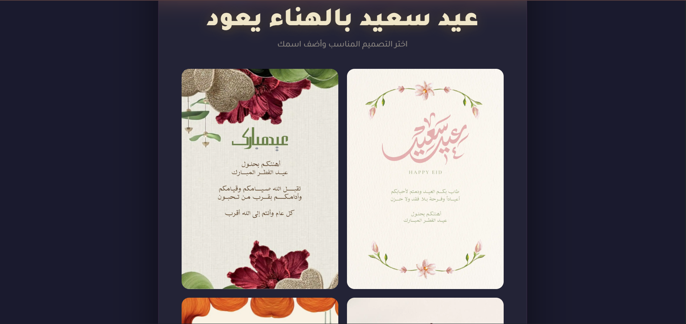
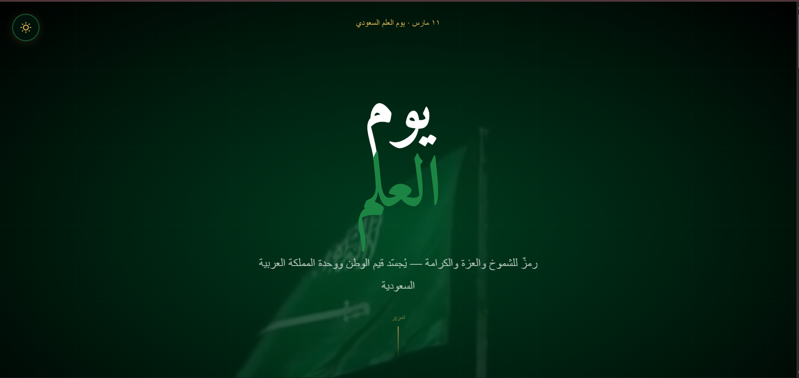
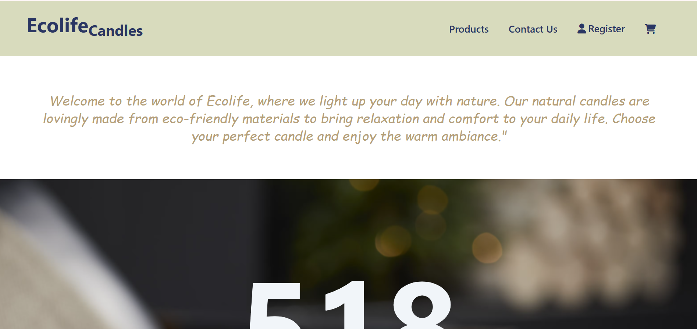

01 / AVIATION ANALYTICS
رحلاتSAUDI AIRPORTS
تحليل قطاع الطيران
من أحدث أعمالي
المطارات السعودية
لوحة معلومات لاستكشاف بيانات المطارات السعودية وعرضها بصريًا، ضمن تحدّي «رحلات».
خريجة علوم حاسبات، أعمل على تحويل البيانات إلى رؤى واضحة. أجمع بين التفكير التحليلي وخبرتي في التعليم لتبسيط النتائج وعرضها بطريقة تساعد على اتخاذ القرار.
مشاريع تحليلية عملت عليها
عام من الخبرة في التعليم
صف تم تنظيفها والعمل عليها
أنا رهف فهد رافع، محللة بيانات وخريجة علوم حاسبات بمرتبة الشرف الأولى. يلهمني اكتشاف المعنى وراء الأرقام، وأجد في كل مجموعة بيانات فرصة لفهم أعمق، وسؤال جديد، وقرار أفضل. أعمل بشغف واهتمام بالتفاصيل، وأؤمن بأن جودة التحليل تبدأ من جودة البيانات.
أهتم بإدخال البيانات وتنظيمها وتدقيقها وتنظيفها، ثم تحليلها وبناء لوحات معلومات تعرض النتائج بوضوح. تجمع خبرتي في التعليم وخلفيتي في التصميم وتطوير الويب بين الدقة التحليلية، وتبسيط الأفكار، وتقديم مخرجات عملية يسهل فهمها والاستفادة منها.
لوحات معلومات ومشاريع تطبيقية في Power BI وExcel
لوحة معلومات لاستكشاف بيانات المطارات السعودية وعرضها بصريًا، ضمن تحدّي «رحلات».
تحليل تدريبي للمبيعات والربحية والخصومات، مع دراسة عودة العملاء للشراء.
تطبيق تفاعلي يعرض مؤشرات المبيعات والمنتجات والبائعين عند اختيار المدينة.
تحليل عينة من 1,500 متبرع لاستكشاف الأنماط السلوكية والتوزيع الجغرافي.
متابعة المكالمات وسرعة الرد وحل الطلبات، ومقارنة الأداء بين الوكلاء وعبر الشهور.
استكشاف حالة الطقس في مناطق الخليج من خلال الحرارة والرطوبة والندى والرياح.
مقارنة ربحية المنتجات والمدن والكميات المباعة، مع تصفية حسب المنتج والمدينة والفترة.
مقارنة إيرادات المديرين عبر فئات المنتجات باستخدام جدول تفصيلي ورسم بياني.
مدارس الريادة التعليمية · الباحة
تجربة عززت قدرتي على تنظيم المعلومات، وقراءة النتائج، وتقديم المعرفة بما يناسب الجمهور؛ وهي مهارات أستثمرها اليوم في تحليل البيانات وعرضها.

جامعة الباحةأساس معرفي أدعمه بالممارسة والتطبيق.
Professional Certificate
خلفيتي في تطوير الويب والتصميم الجرافيكي

لوحة تفاعلية تعرض مصادر المنشآت التجارية في المملكة، مع جداول ورسوم وإمكانية رفع الملفات.
زيارة المشروع
تطبيق Next.js للبحث عن البودكاست باستخدام iTunes API وعرض النتائج المخزنة بصيغة JSON.
زيارة المشروع
واجهة أمامية لإدارة معلومات المرضى والمواعيد والموظفين والخدمات الطبية.
زيارة المشروع
تجربة تفاعلية لإنشاء بطاقات تهنئة مخصصة بمناسبة عيد الفطر 1447.
زيارة المشروع
موقع تعريفي بتاريخ العلم السعودي مع مسابقة ثقافية تفاعلية.
زيارة المشروع
موقع لعرض الشموع الصديقة للبيئة وإبراز هوية العلامة التجارية ومنتجاتها.
زيارة المشروعهوية بصرية وتصاميم تجمع بين وضوح الرسالة وجمال العرض.
أشارك خطوات رحلتي في تحليل البيانات، من إدخال البيانات وتنظيفها إلى التحليل وبناء لوحات المعلومات، بتطبيقات عملية متدرجة.
لا توجد مقالات منشورة حاليًا.
يسعدني التواصل حول فرص العمل ومشاريع تحليل البيانات والتعاون التقني.